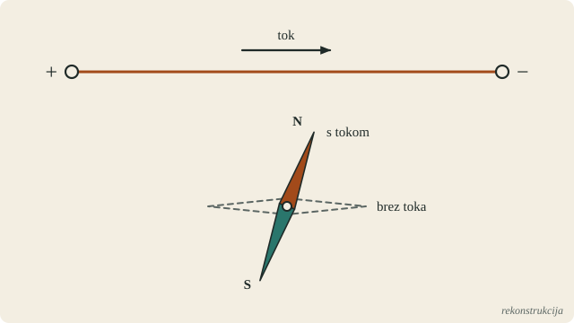
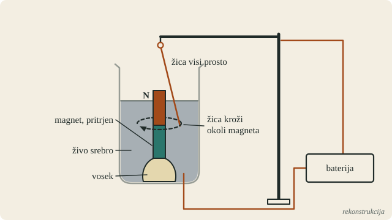
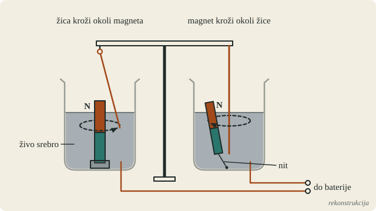
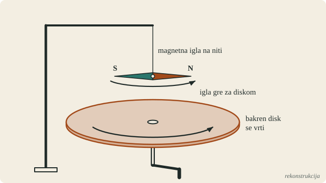
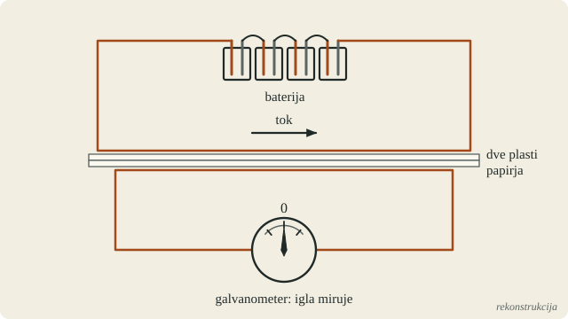
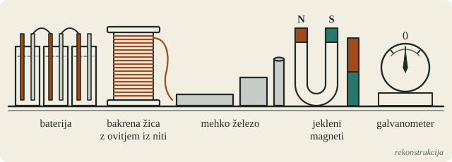
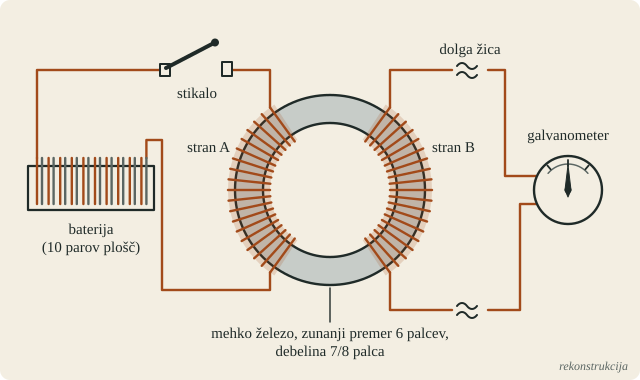
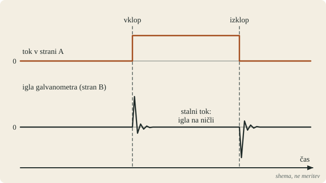
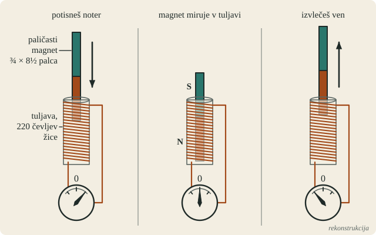
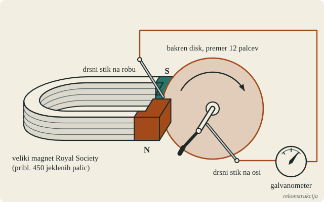

Pred izumom · igra
Faraday, 1831
Tok iz magnetizma: deset let v čevljih Michaela Faradaya
Osnutek R3 · 30. 10. 20261. dejanje · 1820–1822 · London, Royal Institution
Gibanje iz toka
Zgodba
Prolog: vajenec knjigoveza
London, poletje 1821. Ti si Michael Faraday, star 29 let. Rodil si se 22. septembra 1791 v Newingtonu pri Londonu. Oče James je bil kovač.
Pri štirinajstih si šel za vajenca h knjigovezu Riebauu. Knjige, ki si jih vezal, si tudi bral. Leta 1812 si dobil vstopnice za štiri predavanja sira Humphryja Davyja v Royal Institution. Predavanja si si skrbno zapisal, zapiske vezal in jih poslal Davyju. 1. marca 1813 si postal pomočnik v laboratoriju Royal Institution, za 25 šilingov na teden in dve sobi v hiši.
Zdaj imaš svoje delo v laboratoriju Royal Institution na Albemarle Street. Junija si se poročil s Sarah Barnard. Po vsej Evropi pa se govori o eni sami stvari: o magnetni igli, ki se je obrnila.
Viri (2)
Bence Jones, The Life and Letters of Faraday, zv. 1 (1870) · Science Museum Group: Michael FaradayZgodba
Igla, ki se obrne
Julija 1820 je danski profesor Hans Christian Ørsted v Kopenhagnu objavil kratko latinsko poročilo. Žica, po kateri teče tok iz baterije, odkloni magnetno iglo pod seboj. Igle ne privlači in je ne odbija. Igla se obrne počez glede na žico. Če žico položiš pod iglo, se igla obrne v drugo smer.
V Parizu je André-Marie Ampère še isto jesen pokazal, da se tudi dve žici s tokom privlačita ali odbijata. Začel je trditi, da je vsak magnet poln drobnih električnih tokov.
Spomladi 1821 sta v laboratorij Royal Institution prišla Davy in William Hyde Wollaston. Wollaston je pričakoval, da se bo žica s tokom ob magnetu zavrtela okoli lastne osi. Žica se ni zavrtela.
Poleti 1821 te urednik Richard Phillips prosi, da za njegov časopis Annals of Philosophy napišeš zgodovinski pregled elektromagnetizma. Odločiš se, da ne boš samo prepisoval. Vsak poskus, o katerem pišeš, boš ponovil sam.

Viri (5)
Linda Hall Library: Hans Christian Ørsted · Annals of Philosophy, zv. 16 (1820): angleški prevod Ørstedovega poročila · MacTutor: André-Marie Ampère · Bence Jones, The Life and Letters of Faraday, zv. 1 (1870) · Royal Institution: The birth of electric motionIzziv
Sila, ki ne vleče naravnost
Pri ponavljanju poskusov opazuješ iglo od blizu: nad žico, ob njej in pod njo.
Kaj bi naredil ti, zdaj, s tem, kar imaš? Ørstedova sila igle ne vleče k žici in je ne odriva. Iglo samo obrne, potem igla obstane. Kako bi iz te sile naredil napravo, v kateri se žica ali magnet giblje ves čas, dokler teče tok?
Imaš baterijo, bakreno žico, majhne paličaste magnete, steklene posode in vse, kar ima kemijski laboratorij leta 1821.
Tvoj odgovor → napiši ga vodniku igre v polje »Tvoje sporočilo« v panelu na levi (na telefonu spodaj). Piši s svojimi besedami, tudi pol ideje ali grobo skico je dovolj. Vodnik te bo vprašal naprej, namig pa dobiš samo, če ga prosiš.
Namig 1
Glej samo en konec igle, severni pol. Če ga v mislih neseš okoli žice, nad njo, ob njej in pod njo, kam ga sila potiska na vsakem mestu?
Namig 2
Igla ima dva pola. Sila ju potiska v nasprotni smeri, zato se igla samo obrne in obstane. Kako bi dosegel, da na žico deluje samo en pol?
Namig 3
Žica, ki se giblje, mora biti ves čas povezana z baterijo, tudi medtem ko kroži. Kateri prevodnik v tvojem laboratoriju je tekoč?
Razkritje
3. september 1821
Faraday je pri ponavljanju poskusov ugotovil, da pol magneta ob žici ne išče mesta, kjer bi miroval. Rad bi šel okoli žice. Igla se samo obrne, ker oba pola vlečeta v nasprotni smeri.
V ponedeljek, 3. septembra 1821, je to izkoristil. Postavil je magnet, nalil živo srebro in nad njim obesil žico tako, da je njen spodnji konec segal v živo srebro. Ko je stekel tok, je žica začela krožiti okoli pola magneta. Krožila je, dokler je tekel tok. V dnevnik je zapisal: »revolution of the wire round the pole of the magnet«. Naslednji dan je napravo izboljšal: globoka posoda, magnet pokonci v vosku, živo srebro.
V istih dneh je dosegel tudi obratno. Majhen magnet, ki ga je na enem koncu obtežil s platino, je plaval pokonci v živem srebru in krožil okoli nepremične žice.
Zakaj tako: živo srebro je tekoč prevodnik, zato žica med gibanjem ne izgubi stika. Magnet pokonci pusti delovati samo en pol.
Po izročilu, ki ga je leta 1872 zapisal John Hall Gladstone, je Faraday ob vrtečih se kovinah od veselja zaplesal in vzkliknil: »There they go! there they go! we have succeeded at last.« Nato je fanta, ki mu je pomagal v laboratoriju, peljal v cirkus Astley's gledat konje.
To je bila prva naprava, ki je iz električnega toka naredila neprekinjeno gibanje. Je prednica elektromotorja. Članek je izšel 1. oktobra 1821. Pozneje je instrumentar Newman izdelal napravo z dvema posodama, v kateri sta oba pojava drug ob drugem. Opis s sliko je izšel januarja 1822.
Uspeh je imel senco. Ker Faraday v članku ni omenil Wollastona, so med znanstveniki zakrožile govorice, da si je prisvojil tujo zamisel. Wollaston sam je odgovoril mirno, saj je bila njegova zamisel drugačna. Spor se je vrnil leta 1823, ko je Davy nasprotoval Faradayevi izvolitvi v Royal Society. Faraday je bil januarja 1824 kljub temu izvoljen.


Viri (5)
Royal Institution: The birth of electric motion · M. Faraday, Experimental Researches in Electricity, zv. 2 (1844; ponatisi člankov 1821–1823) · Bence Jones, The Life and Letters of Faraday, zv. 1 (1870) · J. H. Gladstone, Michael Faraday (1872) · IEEE Spectrum: 200 Years Ago, Faraday Invented the Electric MotorZgodba
Stavek v zvezku, 1822
Leta 1822 začneš nov zvezek z naslovom Chemical Notes, Hints, Suggestions and Objects of Pursuit: kemijske beležke, namigi, predlogi in cilji. Vanj zapisuješ vprašanja, ki si jih postavljaš za prihodnja leta. Ko na kakšno odgovoriš, ga prečrtaš in pripišeš datum.
Med njimi je kratek stavek: »Convert magnetism into electricity.« Pretvori magnetizem v elektriko.
Tok naredi magnetizem, to je pokazal Ørsted. Prepričan si, da mora iti tudi obratno. Ne veš še, da bo ta stavek čakal devet let.
Viri (2)
Bence Jones, The Life and Letters of Faraday, zv. 1 (1870) · AIP / Royal Institution: katalog Faradayevih zapiskov2. dejanje · 1824–1830 · London; novice iz Pariza
Obratna pot
Zgodba
Disk, ki vleče iglo
Novembra 1824 pride iz Pariza nenavadna novica. François Arago je 22. novembra poročal Akademiji znanosti: če pod obešeno magnetno iglo vrtiš bakren disk, se igla odkloni v smeri vrtenja. Če vrtiš dovolj hitro, se zavrti za diskom.
Baker ni magneten. Kaj torej vleče iglo? Nihče ne zna pojasniti. Leto pozneje Charles Babbage in John Herschel v Londonu pokažeta še obratno: magnet, ki se vrti spodaj, potegne za seboj obešen disk.
Medtem Ampère uči, da so v vsakem magnetu drobni električni tokovi. Če je magnet v resnici tok, zakaj ne bi magnet ustvaril toka v bližnji žici?

Viri (3)
G. Giuliani, Electromagnetic induction: physics, historical breakthroughs, epistemological issues and textbooks (arXiv:2102.11036) · M. Faraday, Experimental Researches in Electricity, zv. 1 (Project Gutenberg) · MacTutor: André-Marie AmpèreIzziv
Zasnuj poskus
Je december 1824. Imaš baterijo, žice, tuljave, jeklene magnete in galvanometer: magnetno iglo v tuljavi, ki pokaže tok.
Kaj bi naredil ti, zdaj, s tem, kar imaš? Kako bi preizkusil, ali magnetizem, ali tok v eni žici, ustvari tok v drugi žici? Opiši postavitev in povej, kaj bo po tvojem pokazala igla, če imaš prav.
Tvoj odgovor → napiši ga vodniku igre v polje »Tvoje sporočilo« v panelu na levi (na telefonu spodaj). Piši s svojimi besedami, tudi pol ideje ali grobo skico je dovolj. Vodnik te bo vprašal naprej, namig pa dobiš samo, če ga prosiš.
Namig 1
Obrni Ørstedov poskus. Ørsted je k igli postavil žico s tokom. Kaj postaviš k čemu, če iščeš pot v drugo smer?
Namig 2
Galvanometer mora biti v tokokrogu, ki nima svoje baterije. Kaj vse lahko postaviš tik ob tak tokokrog ali vanj?
Razkritje
Igla miruje (1824–1828)
28. decembra 1824 je Faraday poskusil prvič. Magnet je postavil v tuljavo, ki je bila v tokokrogu z baterijo in galvanometrom. Pričakoval je, da bo magnet tok oslabil. Učinka ni bilo.
28. novembra 1825 je položil dve žici vzporedno, ločeni le z dvema plastema papirja. Skozi eno je spustil tok iz baterije, drugo je povezal z galvanometrom. Zapisal je, da nikakor ni mogel pokazati nobenega učinka. Poskusil je še 2. decembra 1825 in 22. aprila 1828. Spet nič.
Zakaj tako: Faraday je posnemal Ørsteda. Ørstedov učinek traja, dokler teče tok, zato je tudi on iskal stalen tok v drugi žici: postaviš, počakaš, pogledaš iglo.

Viri (3)
Bence Jones, The Life and Letters of Faraday, zv. 1 (1870) · Bence Jones, The Life and Letters of Faraday, zv. 2 (1870) · M. Faraday, Experimental Researches in Electricity, zv. 1 (Project Gutenberg)Zgodba
Leta drugega dela
Vprašanje iz zvezka čaka, delo pa ne. 7. februarja 1825 postaneš direktor laboratorija Royal Institution. Istega leta iz oljnega ostanka stisnjenega svetilnega plina izločiš novo snov in jo 16. junija predstaviš Royal Society. Danes ji pravimo benzen.
Pet let porabiš za naročilo Royal Society: izboljšati optično steklo za teleskope. Delo je mukotrpno in se ustavi leta 1830. 4. julija 1831 pišeš, da bi steklo rad za nekaj časa odložil, da bi užival v razmišljanju o svojih mislih (»working out my own thoughts«).
Viri (2)
Bence Jones, The Life and Letters of Faraday, zv. 1 (1870) · Royal Institution: Michael Faraday's sample of benzene3. dejanje · avgust 1831 · London, Royal Institution
Miza
Zgodba
Avgust 1831: miza
London, Royal Institution, avgust 1831. Star si 39 let. Od stavka v zvezku je minilo devet let, od prvega neuspelega poskusa skoraj sedem. Steklo je odloženo. Zdaj imaš čas za svoje vprašanje.
Pred tabo je miza. Baterija iz posod s kislino, v vsaki bakrena in cinkova plošča. Bakrena žica, izolirana z ovitjem iz niti; dolžino in debelino izbereš sam. Kosi mehkega železa, ki ti jih kovač skuje po meri. Jekleni magneti, podkvasti in paličasti. Galvanometer, magnetna igla v tuljavi.
Prepričan si, da povezava obstaja v obe smeri. Narava ne dela enosmernih cest.

Viri (2)
Bence Jones, The Life and Letters of Faraday, zv. 2 (1870) · M. Faraday, Experimental Researches in Electricity, zv. 1 (Project Gutenberg)Izziv
Tok iz magnetizma
Kaj bi naredil ti, zdaj, s tem, kar imaš? Iz magnetizma dobi električni tok, ki ga lahko izmeriš.
- Imaš samo to, kar je bilo leta 1831. Ni elektronike in ni ojačevalnikov; edino merilo je igla.
- Ne veš, ali bo učinek močan ali komaj viden.
- Vsi poskusi do zdaj, tvoji in tuji, so pokazali iglo, ki miruje.
Povej, kaj bi postavil, kaj bi naredil in kam bi gledal.
Tvoj odgovor → napiši ga vodniku igre v polje »Tvoje sporočilo« v panelu na levi (na telefonu spodaj). Piši s svojimi besedami, tudi pol ideje ali grobo skico je dovolj. Vodnik te bo vprašal naprej, namig pa dobiš samo, če ga prosiš.
Namig 1
Kako bi v tem laboratoriju dobil najmočnejši magnetizem, kar ga zmoreš? Na mizi nimaš samo jeklenih magnetov.
Namig 2
Ørsted: tok naredi magnetizem, dokler teče. Kaj, če pot nazaj ne deluje v stanju, ampak v trenutku, ko se stanje spremeni? Kdaj bi moral gledati iglo?
Namig 3
Na isti kos mehkega železa navij dve ločeni tuljavi. Prvo prek stikala poveži z baterijo, drugo z galvanometrom. Kaj vidiš v trenutku, ko stikalo vklopiš, in ko ga izklopiš?
Razkritje
29. avgust 1831
29. avgusta 1831 je Faraday začel nov dnevnik poskusov. Dal je narediti obroč iz mehkega železa, debel 7/8 palca, z zunanjim premerom 6 palcev. Na eno stran obroča, stran A, je navil tri žice, vsako dolgo približno 24 čevljev. Na drugo stran, stran B, je navil približno 60 čevljev žice. Tuljavi se nista dotikali. Uporabil je žico, kakršno so izdelovali za ženske klobučke; navijanje je po oceni Royal Institution trajalo okoli deset delovnih dni.
Konca strani B je povezal z dolgo žico, ki je tri čevlje stran tekla čez magnetno iglo. Nato je stran A priklopil na baterijo z desetimi pari plošč. Zapisal je: »immediately a sensible effect on needle« (takoj opazen učinek na iglo). Igla je zanihala in se umirila v prvotni legi. Ko je baterijo odklopil, se je igla spet zganila, tokrat v nasprotno smer. Dokler je tok tekel enakomerno, igla ni pokazala ničesar.
Zakaj je uspelo zdaj:
- Železni obroč z ovoji na strani A je dal mnogo močnejši magnetizem kot jeklen magnet.
- Strani B je dal veliko ovojev, iglo pa postavil daleč od železa, da je ni motilo.
- Iglo je gledal v trenutku vklopa in izklopa, ne pozneje.
Tok ne nastane iz magnetizma, ki je, ampak iz magnetizma, ki se spreminja.
Leta 1825 je ženevski fizik Jean-Daniel Colladon poskusil nekaj podobnega. Galvanometer je postavil v drugo sobo, da ga magnet ne bi motil. Magnet je približal tuljavi in šel pogledat iglo. Igla je mirovala; kratek sunek je bil že mimo. Zgodbo je sam zapisal v spominih, objavljenih leta 1893.
Faradayev obroč se je ohranil. Danes je razstavljen v muzeju Faraday Museum v Royal Institution, ki ga imenuje prvi električni transformator.


Viri (5)
Bence Jones, The Life and Letters of Faraday, zv. 2 (1870) · M. Faraday, Experimental Researches in Electricity, zv. 1 (Project Gutenberg) · Royal Institution: Michael Faraday's ring-coil apparatus · Musée d'histoire des sciences de Genève: Jean-Daniel Colladon (2024) · ETHW: Induction RingZgodba
Plevel ali riba
23. septembra pišeš prijatelju Richardu Phillipsu. Spet se ukvarjaš z elektromagnetizmom in misliš, da si ujel nekaj dobrega, a še ne moreš reči: »It may be a weed instead of a fish«, morda je plevel namesto ribe.
Sunek imaš. Ne veš pa še, ali je za sunek nujna baterija.
Viri (1)
Bence Jones, The Life and Letters of Faraday, zv. 2 (1870)4. dejanje · september–oktober 1831 · London, Royal Institution
Brez baterije
Zgodba
Ali je baterija nujna?
Pri obroču je magnetizem na strani A naredila baterija. Kaj pa navaden jeklen magnet? Ne moreš ga vklopiti in ne izklopiti; ves čas je enako močan.
Pravkar si dopolnil 40 let. Na mizi so paličasti magneti in dolge tuljave, navite na papirnate valje.
Viri (2)
Bence Jones, The Life and Letters of Faraday, zv. 1 (1870) · Bence Jones, The Life and Letters of Faraday, zv. 2 (1870)Izziv
Samo magnet in tuljava
Imaš paličast jeklen magnet in dolgo tuljavo, navito na papirnat valj. Konca tuljave vodita do galvanometra. Baterije ne uporabiš.
Kaj bi naredil ti, zdaj, s tem, kar imaš? Kako iz tega dobiš tok? Kaj bo po tvojem pokazala igla?
Tvoj odgovor → napiši ga vodniku igre v polje »Tvoje sporočilo« v panelu na levi (na telefonu spodaj). Piši s svojimi besedami, tudi pol ideje ali grobo skico je dovolj. Vodnik te bo vprašal naprej, namig pa dobiš samo, če ga prosiš.
Namig 1
Pri obroču je igla trznila samo ob vklopu in izklopu. Kako bi magnetizem v tuljavi »vklopil« in »izklopil«, če magneta ne moreš izklopiti?
Namig 2
Magnetizem v tuljavi se spremeni tudi, če magnet premakneš.
Razkritje
17. oktober 1831
Prvi korak je naredil že 24. septembra. Železni valj s tuljavo je postavil med pola dveh paličastih magnetov. Vsakič, ko je magnetni stik sklenil ali prekinil, je igla trznila. V dnevnik je zapisal: »distinct conversion of magnetism into electricity«. Še vedno pa je potreboval železo in stik.
17. oktobra 1831, peti dan poskusov, je Faraday vzel valjast paličast magnet, debel 3/4 palca in dolg 8 1/2 palca, ter tuljavo z 220 čevlji žice, povezano z galvanometrom. En konec magneta je vstavil v tuljavo, nato pa ga je hitro potisnil do konca. Igla se je premaknila. Ko je magnet izvlekel, se je premaknila v nasprotno smer. Tako je bilo vsakič, ko je magnet potisnil noter ali ga izvlekel. Ko je magnet miroval v tuljavi, se je igla vrnila v prvotno lego.
Zakaj: če tok nastane ob spremembi magnetizma, je tudi gibanje magneta sprememba. Baterija ni več potrebna. Dovolj je roka, ki premika magnet.

Viri (2)
Bence Jones, The Life and Letters of Faraday, zv. 2 (1870) · M. Faraday, Experimental Researches in Electricity, zv. 1 (Project Gutenberg)5. dejanje · 28. oktober–24. november 1831 · Woolwich in London
Tok, ki ne preneha
Zgodba
Samo sunki
Vsak potisk magneta da en sunek. Ti pa bi rad tok, ki teče ves čas.
In še nekaj te muči: Aragov disk iz leta 1824. Baker ni magneten, pa vendar vleče iglo.
V Woolwichu, v hiši gospoda Christieja, je veliki sestavljeni magnet Royal Society. Sestavlja ga okoli 450 jeklenih palic, vsaka dolga 15 palcev. Nekoč je bil last Gowina Knighta. Je najmočnejši magnet, ki ti je dosegljiv.
Viri (2)
M. Faraday, Experimental Researches in Electricity, zv. 1 (Project Gutenberg) · Bence Jones, The Life and Letters of Faraday, zv. 2 (1870)Izziv
Tok, ki teče ves čas
Kaj bi naredil ti, zdaj, s tem, kar imaš? Kako dobiš tok, ki teče ves čas, dokler hočeš, ne samo sunek? Pomisli tudi na Aragov disk: zakaj vrteč se bakren disk vleče iglo?
Tvoj odgovor → napiši ga vodniku igre v polje »Tvoje sporočilo« v panelu na levi (na telefonu spodaj). Piši s svojimi besedami, tudi pol ideje ali grobo skico je dovolj. Vodnik te bo vprašal naprej, namig pa dobiš samo, če ga prosiš.
Namig 1
Sunek nastane ob spremembi. Katero gibanje se nikoli ne konča, naprava pa ostane na istem mestu?
Namig 2
Arago je bakren disk vrtel pod iglo. Kaj, če bi ga vrtel med poloma magneta in se ga z žico dotaknil na dveh mestih?
Razkritje
28. oktober 1831
28. oktobra 1831, deveti dan poskusov, je Faraday med pola velikega magneta Royal Society postavil bakren disk s premerom 12 palcev in debelino okoli 1/5 palca, na medeninasti osi. Rob in os je prevlekel z živim srebrom. Eno žico do galvanometra je ohlapno ovil okoli osi, drug prevodnik je z roko pritiskal na rob diska med poloma. Galvanometer je bil preprost: dve namagneteni šivanki na bilki suhe trave, obešeni na svileno nit. Ko se je disk hitro vrtel, je igla skočila za 90° ali več. Pri skrbnejši izvedbi je ves čas vrtenja stala odklonjena skoraj za 45°. Faraday je zapisal, da je dosegel »the production of a permanent current of electricity by ordinary magnets«: stalen tok iz navadnih magnetov.
S tem je pojasnil tudi Aragov disk. V vrtečem se bakru ob magnetu tečejo tokovi, ki s svojim magnetizmom vlečejo iglo za seboj.
Zakaj: vrtenje je sprememba, ki se ne konča. Rob diska ves čas teče mimo pola, zato tok ne usahne.

Viri (3)
Bence Jones, The Life and Letters of Faraday, zv. 2 (1870) · M. Faraday, Experimental Researches in Electricity, zv. 1 (Project Gutenberg) · G. Giuliani, Electromagnetic induction: physics, historical breakthroughs, epistemological issues and textbooks (arXiv:2102.11036)Epilog
Kaj je sledilo
24. novembra 1831 je Faraday odkritja prebral pred Royal Society kot prvo serijo svojih Experimental Researches in Electricity; natisnjena je bila maja 1832. Tok, ki ga povzroči tok, je imenoval »volta-electric induction«, tok, ki ga povzroči magnet, pa »magneto-electric induction«. V isti razpravi je opisal »magnetne krivulje«, črte magnetne sile, kakršne pokažejo železni opilki okoli magneta.
Od prvega neuspelega poskusa (28. decembra 1824) do obroča (29. avgusta 1831) je minilo 6 let in 8 mesecev. Od stavka v zvezku devet let.
Novica je potovala hitro. Joseph Henry v Albanyju je slišal za Faradayev uspeh, a ne za njegovo metodo, in julija 1832 objavil svoje poskuse. 3. septembra 1832 so v Parizu Akademiji pokazali stroj Hippolyta Pixiija: z ročico vrtiš magnet pred tuljavama, preklopnik pa da tok v eni smeri.
V Edinburghu se je 13. junija 1831, enajst tednov pred obročem, rodil James Clerk Maxwell. Faradayeve črte sile je pozneje prevedel v matematiko; prvi članek o njih je prebral decembra 1855.
Obroč z dvema tuljavama na istem železu je zgradba vsakega transformatorja; praktični transformatorji so prišli v 1880-ih, med njimi leta 1885 transformator Zipernowskega, Bláthyja in Déria v Budimpešti. Disk, ki se vrti med poloma, je prednik vseh generatorjev. Vsaka elektrarna danes dela po načelu, ki ga je Faraday našel tisto jesen.
Še ena zgodba za konec. Leta 1836 je Faraday sredi predavalnice Royal Institution zgradil kocko s stranico 12 čevljev: lesen okvir, bakrena žica, papir in trakovi kositrne folije. Zaprl se je vanjo, kocko od zunaj močno naelektril in v njej ni zaznal ničesar. Danes ji pravimo Faradayeva kletka.
Več o Faradayu: Michael Faraday na seznamu Top ljudje.